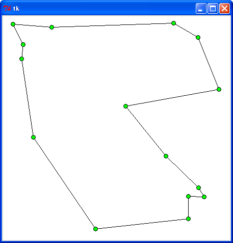
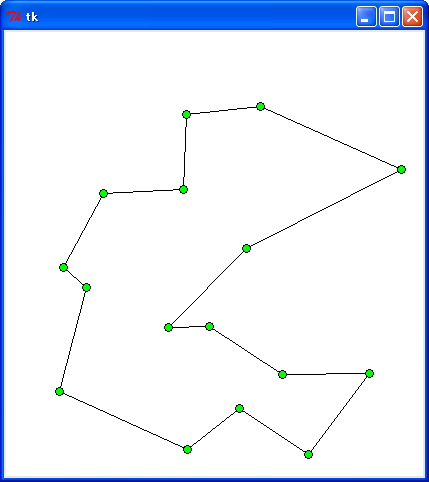
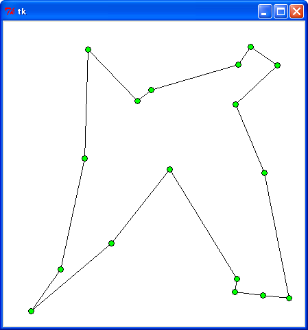
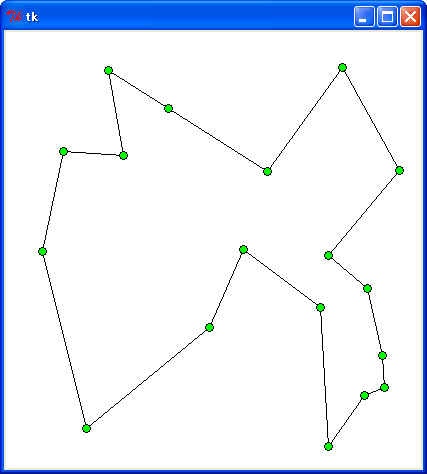
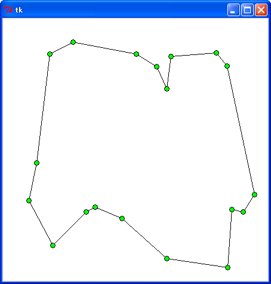
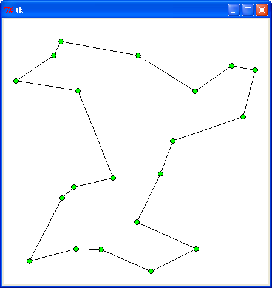
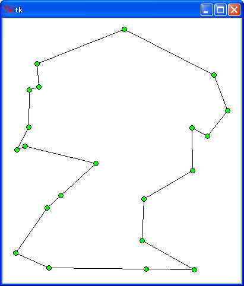
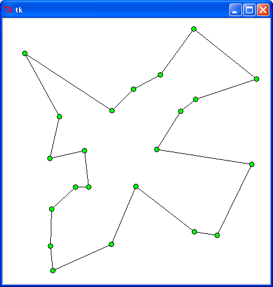

巡回セールスマン問題 (TSP) の続きです。今回は動的計画法で TSP の厳密解を求めてみましょう。都市数を N とすると、動的計画法は N2 * 2N に比例する時間で TSP の厳密解を求めることができます。ただし、必要となるメモリ量が N * 2N に比例するので、N を大きな値にすることはできません。N <= 20 程度ならば、M.Hiroi のオンボロマシン (Windows XP, celeron 1.40 GHz, Memory 1 GB) でも Python で解くことができます。
TSP を動的計画法で解く場合、未訪問の都市を巡回して出発点に戻るまでの最短距離を返す関数 tsp(p, v) を考えます。都市は 0 から n - 1 までの整数で表すことにしましょう。v は整数値で、都市を訪問したか否かをビットで表します。都市の個数を n とすると、v は 0 から 2n - 1 までの値になります。p はセールスマンがいる都市の位置を表します。
すべての都市を訪問した場合、セールスマンは出発点に戻るだけです。このとき、v は n 個のビットが 1 になるので、値は 2n - 1 になります。出発点を 0 とすると、tsp() は都市 0 と p の距離を返すだけです。ここで、距離を求める関数を dis(p, 0) と定義しましょう。
残りの都市が一つだけの場合、その都市を x とすると最短距離は dis(p, x) + tsp(v | (1 << x), x) で求めることができます。残りの都市が x, y の場合、x に行く場合の最短距離 lx と y に行く場合の最短距離 ly は次のように求めることができます。
lx = dis(p, x) + tsp(v | (1 << x), x) ly = dis(p, y) + tsp(v | (1 << y), y)
tsp() は lx と ly の短いほうを返します。未訪問の都市が k 個ある場合は、k 通りの経路の最短距離を求め、その中で最短距離を返せばいいわけです。このように、残りの都市の最短経路は、p に到達するまでの経路 (前半部分の経路) の影響を受けません。たとえば、都市 A, B, C を訪れて D に到達した場合、順番が A, B, C, D だろうが A, C, B, D であろうが関係なく、残りの都市の最短経路を求めることができます。
これをそのままプログラムすると次のようになります。
リスト : 巡回路の最短距離を求める
def tsp(p, v):
if (1 << point_size) - 1 == v:
return distance_table[p][0]
else:
return min([distance_table[p][x] + tsp(x, v | (1 << x)) \
for x in xrange(point_size) if not (v & (1 << x))])
都市の個数は大域変数 point_size に格納されています。v が 2point_size - 1 と等しい場合、すべての都市を訪問したので、p から出発点 0 までの距離を返します。そうでなければ、まだ訪問していない都市へ進みます。未訪問の都市 x へ行く場合の最短距離をリスト内包表記の中で求め、その中から関数 min で最短距離を選択し、その値を return で返します。
このままだと tsp() は単純な深さ優先探索になります。tsp() を動的計画法に変換する一番簡単な方法は「メモ化関数」を使うことです。次のリストを見てください。
リスト : メモ化による高速化
# メモ化関数
def memoize(f):
table = {}
def func(*args):
if not args in table:
table[args] = f(*args)
return table[args]
return func
# メモ化
tsp = memoize(tsp)
メモ化関数の詳細は拙作のページ 再帰定義 をお読みください。
それでは実行してみましょう。関数 tsp は tsp(0, 1) と呼び出します。
表 : 実行結果
時間 (秒)
: 距離 : tsp : memo
----------+--------+--------+-------
data0.txt : 847.2 : 0.063 : 0.004
data1.txt : 947.2 : 0.39 : 0.011
data2.txt : 1047.2 : 3.61 : 0.028
data3.txt : 1147.2 : 37.92 : 0.066
実行環境 : Windows XP, celeron 1.40 GHz, Python 2.7
tsp の結果はメモ化せずに深さ優先探索した場合です。メモ化することにより、厳密解を高速に求めることができます。
次は動的計画法らしく繰り返しでプログラムを作ってみましょう。都市 A, B, C, D を A から出発して巡回することを考えます。各都市間の距離は次のように定義されているとします。
: A : B : C : D --+--------------- A : 0 : 3 : 4 : 7 B : 3 : 0 : 5 : 5 C : 4 : 5 : 0 : 6 D : 7 : 5 : 6 : 0
再帰関数 tsp(p, v) を繰り返しに変換する場合、v の値を減らしていくと簡単です。次の図を見てください。
D C B A : A B C D
---------+-------------
1 1 1 1 : - 3 4 7
1 1 0 1 : - - 8 8 # (C,B,A)=5+3=8 (D,B,A)=5+3=8
1 0 1 1 : - 10 - 9 # (D,C,A)=6+4=10 (B,C,A)=5+4=9
1 0 0 1 : - - - 14 # min((D,B,C,A)=5+9=14,(D,C,B,A)=6+8=14)
0 1 1 1 : - 12 13 - # (B,D,A)=5+7=12 (C,D,A)=6+7=13
0 1 0 1 : - - 14 - # min((C,B,D,A)=5+12=17, (C,D,B,A)=6+8=14)
0 0 1 1 : - 15 - - # min((B,C,D,A)=5+13=18, (B,D,C,A)=5+10=15)
0 0 0 1 : 18 - - - # min((A,B,D,C,A)=3+15=18,
(A,C,D,B,A)=4+14=18,
(A,D,B,C,A)=7+14=21)
左側が v の値で、訪問した都市を 1 で表します。右側が現在位置を表していて、その都市から他の都市へ移動する場合の最短距離を格納する配列になります。配列名を table とすると、table は 2 次元配列になります。繰り返しはすべての都市を訪問した状態から始めます。この場合、A に戻るしかないので、各都市と A の距離を table にセットします。
次に、v の値を減らします。A が 0 になることはないので、(D, C, B) の状態を 2 進数として考えます。(1, 1, 1) から 1 を引き算すると (1, 1, 0) になり、未訪問の都市は B だけになります。C から B へ行く場合、(C, B) の距離と B から A までの最短距離を足し算しますが、この最短距離は配列 table から求めることができます。
v の値に B のフラグ 1 をセットすると、talbe[(1, 1, 1)][B] から残りの経路の最短距離 3 が得られるので、距離は 5 + 3 = 8 になります。これを table[(1, 1, 0)][C] にセットします。同様に、D から B へ行く場合の経路の最短距離 dis(D, B) + talbe[(1, 1, 1)][B] を table[(1, 1, 0)][D] にセットします。
(1, 1, 0) から 1 を引き算すると (1, 0, 1) になり、未訪問の都市は C だけになります。同様に、B から C へ行く場合の経路の最短距離 dis(B, C) + table[(1, 1, 1)][C] と、D から C へ行く場合の経路の最短距離 dis(D, C) + table[(1, 1, 1)][C] を求めて table にセットします。
(1, 0, 1) から 1 を引き算すると (1, 0, 0) になり、訪問した都市が D で、未訪問の都市が B, C になります。この場合、D から B へ行く経路の最短距離 dis(D, B) + table[(1, 0, 1)][B] と、D から C へ行く経路の最短距離 dis(D, C) + table[(1, 1, 0)][C] を比較して、短いほうを table にセットします。
あとは同様に v の値を 1 減らして繰り返し最短距離を求めて table にセットします。最後は A 以外の都市が未訪問の状態になります。この場合、A から各都市 (B, C, D) へ行く場合の最短距離を求め、その中から最も短い距離を選択します。これが TSP の厳密解となります。
これをそのままプログラムすると次のようになります。
リスト : 繰り返しによる実装
def tsp_dp(size):
size1 = size - 1
table = [None] * (1 << size1)
table[(1 << size1) - 1] = [distance_table[i][0] for i in xrange(1, size)]
for v in xrange((1 << size1) - 2, 0, -1):
tmp = [1e300] * size1
for i in xrange(size1):
if (1 << i) & v:
# 現在地点 i
tmp[i] = min([distance_table[i+1][j+1] + table[v | (1 << j)][j] \
for j in xrange(size1) if not (1 << j) & v])
table[v] = tmp
return min([distance_table[i+1][0] + table[1 << i][i] for i in xrange(size1)])
必要な配列の大きさは 2size-1 * (size - 1) になりますが、最初は大きさ 2size-1 の配列 table を用意して、繰り返しで table の中に大きさ (size - 1) の配列をセットしていきます。table[2size-1 - 1] には各都市から出発点に戻る距離を格納します。この配列も出発点 0 を省いていることに注意してください。
変数 v は出発点以外の都市の状態を、変数 i が現在いる都市を、変数 j が行き先の都市を表します。実際の都市は i と j の値に 1 を足し算して求めます。あとは i から j へ行く経路の最短距離を求め、その中から最小値を関数 min で選んで配列 tmp[i] にセットします。訪問済みの都市をすべて調べたら table[v] に tmp をセットします。v が 0 になったら、出発点から各都市へ行く経路の最短距離を求め、その中から最小値をで選んで返します。
それでは都市の個数を 15 から 18 に増やして実行してみましょう。次に示す 4 種類のテストデータを用意しました。
data15 data16 data17 data18
-------------------------------------
20 20 20 20 20 20 20 20
120 20 120 20 120 20 120 20
220 20 220 20 220 20 220 20
320 20 320 20 320 20 320 20
70 120 70 120 420 20 420 20
170 120 170 120 70 120 70 120
270 120 270 120 170 120 170 120
370 120 370 120 270 120 270 120
20 220 20 220 370 120 370 120
120 220 120 220 20 220 470 120
220 220 220 220 120 220 20 220
320 220 320 220 220 220 120 220
70 320 70 320 320 220 220 220
170 320 170 320 70 320 320 220
270 320 270 320 170 320 70 320
370 320 270 320 170 320
370 320 270 320
370 320
図 : テストデータ
結果は次のようになりました。
表 : 実行結果
時間 (秒)
: 距離 : memo : loop
-----------+--------+--------+-------
data15.txt : 1570.8 : 2.11 : 1.28
data16.txt : 1670,8 : 4.84 : 2.91
data17.txt : 1770.8 : 11.11 : 6.57
data18.txt : 1870.8 : 26.68 : 14.91
実行環境 : Windows XP, celeron 1.40 GHz, Python 2.7
メモ化したバージョンよりも繰り返しのほうが速くなりました。メモリに余裕があるならば、都市の個数をもう少し増やしても実行できると思います。M.Hiroi のオンボロマシンで都市を 20 個にして実行したところ、時間はかかりましたが厳密解を得ることはできました。興味のある方はいろいろ試してみてください。
今までのプログラムは最短距離を求めるだけでしたが、巡回路を求めることも簡単にできます。次のリストを見てください。
リスト : 最短距離の巡回路を求める
# 0 番目の要素の最小値を返す
def min0(ary):
v = (1e300, None)
for x in ary:
if v[0] > x[0]: v = x
return v
# 動的計画法
def tsp_dp1(size):
size1 = size - 1
table = [None] * (1 << size1)
table[(1 << size1) - 1] = [(distance_table[i][0], 0) for i in xrange(1, size)]
for v in xrange((1 << size1) - 2, 0, -1):
tmp = [1e300] * size1
for i in xrange(size1):
if (1 << i) & v:
# 現在地点 i
tmp[i] = min0([(distance_table[i+1][j+1] + table[ | (1 << j)][j][0], j) \
for j in xrange(size1) if not (1 << j) & v])
table[v] = tmp
s = min0([(distance_table[i+1][0] + table[1 << i][i][0], i) for i in xrange(size1)])
return s[0], get_min_path(table, size, s[1])
都市 i から j へ行くときが最短経路の場合、その距離だけではなく行き先の都市 j も配列 table に格納します。このとき、j の値は実際の都市の値から 1 を引いたものであることに注意してください。距離と都市はタプルに格納すればいいでしょう。あとは、出発点から行き先の都市を順番にたどっていけば最短の巡回路を求めることができます。この処理を関数 make_min_path で行います。
リスト : 最短経路を求める
def get_min_path(table, size, p):
path = [0, p + 1]
v = 1 << p
while len(path) < size:
_, q = table[v][p]
path.append(q + 1)
v |= (1 << q)
p = q
return path
引数 table は距離と行き先の都市を格納した配列、size は都市の個数、p は出発点から次に進む都市を表します。実際の都市は p + 1 になります。経路は path に格納します。path は [0, p + 1] に初期化します。そして、変数 v を 1 << p に初期化します。あとは、table[v][p] から次の行き先 q を求め、q を path に追加します。そして、v と p の値を更新します。これを path の長さが size になるまで繰り返します。
あとのプログラムは簡単なので説明は割愛します。詳細は プログラムリスト１ をお読みください。
それでは実行してみましょう。次に示す 4 種類のテストデータを用意しました。いずれのデータも乱数で都市の位置を決定したものです。
r15.txt r16.txt r17.txt r18.txt
-----------------------------------
365 355 365 343 124 42 324 416
242 178 182 84 41 424 316 277
425 145 82 257 84 363 263 141
336 15 164 297 341 377 38 221
321 276 59 237 381 222 104 40
385 338 304 424 339 122 164 78
61 239 278 344 119 201 239 219
183 419 397 139 338 396 205 297
21 17 205 296 361 38 338 37
97 23 179 159 243 217 363 258
365 399 256 76 343 64 380 357
396 356 99 163 379 401 360 365
384 43 235 378 400 65 378 325
41 57 55 361 196 117 119 125
38 85 242 218 417 405 82 398
183 419 158 325 59 121
216 101 395 140
324 225
図 : テストデータ
実行結果は次のようになりました。

C>python tsp_dp.py < r15.txt 1607.05238055 1.68837799217

C>python tsp_dp.py < r16.txt 1497.52071544 3.95451712438

C>python tsp_dp.py < r17.txt 1695.89854178 9.07823927343

C>python tsp_dp.py < r18.txt 1691.72416777 20.4063633786
表 : 実行結果
: 距離 : 秒
--------+--------+-------
r15.txt : 1607.1 : 1.69
r16.txt : 1497.5 : 3.95
r17.txt : 1695.9 : 9.08
r18.txt : 1691.7 : 20.41
実行環境 : Windows XP, celeron 1.40 GHz, Python 2.7
実行時間は最短距離だけを求めるプログラムよりも少し遅くなるようです。興味のある方はいろいろ試してみてください。
都市の個数が N <= 20 程度であれば、動的計画法で TSP の厳密解を求めることができますが、都市の個数が増えると必要となるメモリ量が大幅に増えてしまいます。そこで、省メモリで厳密解を求める簡単な方法を試してみましょう。都市の個数が N <= 22 程度であれば、簡単な下限値枝刈り法で厳密解を求めることができます。この方法は最悪の場合 N! に比例する時間がかかりますが、実際に試してみるとまあまあ上手くいくようです。
TSP の場合、節 (都市) には 2 本の辺が接続されています。そして、節につながる 2 辺の長さを足して 2 で割った値が巡回路の長さになります。巡回路の厳密解において節 n につながる 2 辺の長さを lm, ln、節 n のすべての辺の中で最小の 2 辺を lx, ly とすると、lm + ln >= lx + ly が成立することは明白です。したがって、巡回路の長さは各節の最小の 2 辺の総和を 2 で割った値より短くなることはありません。これを下限値として利用することができます。
具体的には、各節の最小の 2 辺 lx, ly を求めて (lx + ly) / 2 を計算します。この値を lz とすると、各節の lz の総和が巡回路の下限値となります。巡回路を生成していくとき、暫定解 (上限値) の長さを la, 訪問した都市の経路の長さを lb, 未訪問の都市の lz の総和を lc とすると、生成している巡回路の長さは lb + lc よりも短くなることはありません。厳密解の長さは la 以下になることがわかっているので、la < lb + lc になった時点で枝刈りすることができます。
プログラムは次のようになります。
リスト : 下限値を作る
def make_lower_value(size):
table = []
for i in xrange(size):
tmp = [distance_table[i][j] for j in xrange(size)]
tmp.sort()
# 先頭は 0 になる
min_len = (tmp[1] + tmp[2]) / 2
table.append(min_len)
return table
関数 make_lower_value は節 i の下限値を求めて配列にセットします。distance_table から i に接続されている辺の長さを求め、関数 sort で昇順にソートします。tmp には i から i までの距離も含まれているので、先頭は 0 になることに注意してください。あとは (tmp[1] + tmp[2]) / 2 を table にセットするだけです。
次は下限値枝刈り法で探索を行う関数 dfs を作ります。
リスト : 簡単な下限値枝刈り法
def dfs(buff):
def perm(n, size, path, now_len, rest_len):
global min_len, min_path
if now_len + rest_len > min_len:
return
if size == n:
new_len = now_len + distance_table[path[-1]][path[0]]
if new_len < min_len:
min_len = new_len
min_path = path[:]
else:
for x in xrange(1, size):
if x not in path:
if n != 2 or path[0] < x:
new_len = now_len + distance_table[path[-1]][x]
path.append(x)
perm(n + 1, size, path, new_len, rest_len - lower_table[x])
path.pop()
#
global min_len, min_path, lower_table
lower_table = make_lower_value(point_size)
# 欲張り法で上限値を求める
min_path = optimize1(point_size, greedy0(range(point_size)))
min_len = path_length(min_path)
# じゅず順列を生成する
for x in xrange(1, point_size):
perm(2, len(buff), [x, 0], distance_table[x][0], sum(lower_table[1:]))
return min_path
暫定解 (上限値) は大域変数 min_len, min_path にセットします。最初に、欲張り法で上限値を求めます。あとは局所関数 perm でじゅず順列を生成します。引数 now_len が経路 path の長さ、rest_len が残りの経路の下限値となります。path の初期値は [x, 0] なので、now_len の初期値は (x, 0) の長さ、rest_len の初期値は節 0 を除いた下限値の総和になります。
関数 perm では、最初に now_len + rest_len が min_len よりも大きいかチェックし、そうであれば return で探索を打ち切ります。探索を進める場合、経路の長さと残りの経路の下限値を更新します。経路の長さは now_len に distance_table[path[-1]][x] を加算するだけです。下限値は rest_len から lower_table[x] を引き算するだけです。
あとのプログラムは簡単なので説明は割愛します。詳細は プログラムリスト２ をお読みください。
それでは実行してみましょう。上限値を 1e300 に設定した場合と、欲張り法で求めた場合の 2 通りの方法で実行しました。
表 : 実行結果
: 距離 : 上限値 : 秒 : 上限値 : 秒
-----------+--------+--------+-------+--------+--------
data15.txt : 1570.8 : 1e300 : 0.16 : 1570.8 : 0.010
data16.txt : 1670,8 : 1e300 : 0.42 : 1670.8 : 0.013
data17.txt : 1770.8 : 1e300 : 0.60 : 1818.0 : 0.062
data18.txt : 1870.8 : 1e300 : 2.38 : 1918.0 : 0.082
r15.txt : 1607.1 : 1e300 : 1.55 : 1607.1 : 0.70
r16.txt : 1497.5 : 1e300 : 2.77 : 1540.9 : 0.24
r17.txt : 1695.9 : 1e300 : 35.21 : 1727.1 : 10.94
r18.txt : 1691.7 : 1e300 : 34.23 : 1715.5 : 11.24
実行環境 : Windows XP, celeron 1.40 GHz, Python 2.7
上限値を欲張り法で求めたほうが実行時間は高速になりました。規則的なデータの場合、下限値による枝刈りが有効に機能するようで、動的計画法よりも高速になりました。ランダムデータの場合、下限値による枝刈りは十分に機能していますが、規則的なデータよりも効果は少ないようで、r17.txt では動的計画法よりも遅くなりました。
最後に、都市の個数を 19 から 22 に増やして試してみましょう。
r19.txt r20.txt r21.txt r22.txt
-----------------------------------
422 295 396 162 323 424 264 95
140 324 96 38 22 396 137 222
275 118 221 336 205 19 298 156
282 64 121 380 61 116 323 136
403 324 416 85 379 156 359 364
200 335 98 296 75 320 122 283
377 417 377 78 356 96 79 235
376 80 44 400 242 423 321 358
118 40 84 61 78 421 37 59
358 58 319 380 24 222 80 382
258 81 117 278 320 257 82 320
84 380 22 103 157 245 219 119
275 402 162 381 345 199 417 245
79 60 244 417 45 121 182 379
384 320 317 120 319 185 425 102
57 242 260 256 58 77 223 282
224 60 280 202 44 184 320 18
155 316 223 61 235 375 183 155
44 305 124 119 98 299 144 283
182 263 38 216 258 220
238 305 95 165
84 423
図 : テストデータ
都市の配置は乱数で決めたものです。実行結果は次のようになりました。

C>python tsp_dfs.py < r19.txt 1444.05886188 (上限値) 1444.05886188 (厳密解) 0.9688259262 (時間 ; 秒)

C>python tsp_dfs.py < r20.txt 1672.31151773 1672.31151773 5.23844371282

C>python tsp_dfs.py < r21.txt 1629.73089081 1623.61087174 5.19870123158

C>python tsp_dfs.py < r22.txt 1886.94093404 1883.07293717 105.253606254
表 : 実行結果
: 距離 : 秒
--------+--------+--------
r19.txt : 1444.1 : 0.97
r20.txt : 1672.3 : 5.24
r21.txt : 1623.6 : 5.20
r22.txt : 1883.1 : 105.25
実行環境 : Windows XP, celeron 1.40 GHz, Python 2.7
簡単な枝刈りですが、都市が 22 個程度であれば、それなりに動作するようです。ただし、都市の個数をもっと増やす場合、このような簡単な方法で厳密解を求めるのは無理なので、別な方法を考える必要があります。ちょっと調べてみたところ、「線形計画法 (整数計画法) 」と「分枝限定法」を使って厳密解を求める方法があるようです。いつになるかわかりませんが、プログラムを作ることができたらいいなと思っています。
# coding: utf-8
#
# tsp_dp.py : 巡回セールスマン問題 (動的計画法)
#
# Copyright (C) 2012 Makoto Hiroi
#
import sys
import math
import time
from Tkinter import *
# 標準入力よりデータを読み込む
def read_data():
buff = []
for a in sys.stdin:
b = a.split()
buff.append((int(b[0]), int(b[1])))
return buff
# 距離をセット
def distance(ps):
size = len(ps)
table = [[0] * size for _ in xrange(size)]
for i in xrange(size):
for j in xrange(size):
if i != j:
dx = ps[i][0] - ps[j][0]
dy = ps[i][1] - ps[j][1]
table[i][j] = math.sqrt(dx * dx + dy * dy)
return table
# メモ化関数
def memoize(f):
table = {}
def func(*args):
if not args in table:
table[args] = f(*args)
return table[args]
return func
##
## 動的計画法
##
# 単純な深さ優先探索
def tsp(p, v):
if (1 << point_size) - 1 == v:
return distance_table[p][0]
else:
return min([distance_table[p][x] + tsp(x, v | (1 << x)) \
for x in xrange(point_size) if not (v & (1 << x))])
# メモ化
tsp = memoize(tsp)
# 繰り返しによる実装
def tsp_dp(size):
size1 = size - 1
table = [None] * (1 << size1)
table[(1 << size1) - 1] = [distance_table[i][0] for i in xrange(1, size)]
for v in xrange((1 << size1) - 2, 0, -1):
tmp = [1e300] * size1
for i in xrange(size1):
if (1 << i) & v:
# 現在地点 i
tmp[i] = min([distance_table[i+1][j+1] + table[v | (1 << j)][j] \
for j in xrange(size1) if not (1 << j) & v])
table[v] = tmp
return min([distance_table[i+1][0] + table[1 << i][i] for i in xrange(size1)])
#
# 経路を求める場合
#
# 0 番目の要素の最小値を返す
def min0(ary):
v = (1e300, None)
for x in ary:
if v[0] > x[0]: v = x
return v
#
def tsp_dp1(size):
size1 = size - 1
table = [None] * (1 << size1)
table[(1 << size1) - 1] = [(distance_table[i][0], 0) for i in xrange(1, size)]
for v in xrange((1 << size1) - 2, 0, -1):
tmp = [1e300] * size1
for i in xrange(size1):
if (1 << i) & v:
# 現在地点 i
tmp[i] = min0([(distance_table[i+1][j+1] + table[v | (1 << j)][j][0], j) \
for j in xrange(size1) if not (1 << j) & v])
table[v] = tmp
s = min0([(distance_table[i+1][0] + table[1 << i][i][0], i) for i in xrange(size1)])
return s[0], get_min_path(table, size, s[1])
# パスを求める
def get_min_path(table, size, p):
path = [0, p + 1]
v = 1 << p
while len(path) < size:
_, q = table[v][p]
path.append(q + 1)
v |= (1 << q)
p = q
return path
# データ入力と大域変数の初期化
point_table = read_data()
point_size = len(point_table)
distance_table = distance(point_table)
s = time.clock()
min_len, min_path = tsp_dp1(point_size)
#min_len = tsp_dp(point_size)
#min_path = []
print min_len
print time.clock() - s
##
## 経路の表示
##
def draw_path(path):
x0, y0 = path[0]
for i in xrange(1, len(path)):
x1, y1 = path[i]
c0.create_line(x0, y0, x1, y1)
x0, y0 = x1, y1
c0.create_line(x0, y0, path[0][0], path[0][1])
for x, y in path:
c0.create_oval(x - 4, y - 4, x + 4, y + 4, fill = "green")
max_x = max(map(lambda x: x[0], point_table)) + 20
max_y = max(map(lambda x: x[1], point_table)) + 20
root = Tk()
c0 = Canvas(root, width = max_x, height = max_y, bg = "white")
c0.pack()
draw_path(map(lambda x: point_table[x], min_path))
root.mainloop()
# coding: utf-8
#
# tsp_dfs.py : 巡回セールスマン問題 (単純な下限値枝刈り法)
#
# Copyright (C) 2012 Makoto Hiroi
#
import sys
import math
import time
from Tkinter import *
# 標準入力よりデータを読み込む
def read_data():
buff = []
for a in sys.stdin:
b = a.split()
buff.append((int(b[0]), int(b[1])))
return buff
# 距離の計算
def distance(ps):
size = len(ps)
table = [[0] * size for _ in xrange(size)]
for i in xrange(size):
for j in xrange(size):
if i != j:
dx = ps[i][0] - ps[j][0]
dy = ps[i][1] - ps[j][1]
table[i][j] = math.sqrt(dx * dx + dy * dy)
return table
# 経路の長さ
def path_length(path):
n = 0
i = 1
for i in xrange(1, len(path)):
n += distance_table[path[i - 1]][path[i]]
n += distance_table[path[0]][path[-1]]
return n
###
### 局所探索法
###
# 2-opt 法
def opt_2(size, path):
global distance_table
total = 0
while True:
count = 0
for i in xrange(size - 2):
i1 = i + 1
for j in xrange(i + 2, size):
if j == size - 1:
j1 = 0
else:
j1 = j + 1
if i != 0 or j1 != 0:
l1 = distance_table[path[i]][path[i1]]
l2 = distance_table[path[j]][path[j1]]
l3 = distance_table[path[i]][path[j]]
l4 = distance_table[path[i1]][path[j1]]
if l1 + l2 > l3 + l4:
# つなぎかえる
new_path = path[i1:j+1]
path[i1:j+1] = new_path[::-1]
count += 1
total += count
if count == 0: break
return path, total
# or-opt 法 (簡略版)
def or_opt(size, path):
global distance_table
total = 0
while True:
count = 0
for i in xrange(size):
# i 番目の都市を (j) - (j1) の経路に挿入する
i0 = i - 1
i1 = i + 1
if i0 < 0: i0 = size - 1
if i1 == size: i1 = 0
for j in xrange(size):
j1 = j + 1
if j1 == size: j1 = 0
if j != i and j1 != i:
l1 = distance_table[path[i0]][path[i]] # i0 - i - i1
l2 = distance_table[path[i]][path[i1]]
l3 = distance_table[path[j]][path[j1]] # j - j1
l4 = distance_table[path[i0]][path[i1]] # i0 - i1
l5 = distance_table[path[j]][path[i]] # j - i - j1
l6 = distance_table[path[i]][path[j1]]
if l1 + l2 + l3 > l4 + l5 + l6:
# つなぎかえる
p = path[i]
path[i:i + 1] = []
if i < j:
path[j:j] = [p]
else:
path[j1:j1] = [p]
count += 1
total += count
if count == 0: break
return path, total
# 組み合わせ
def optimize1(size, path):
while True:
path, _ = opt_2(size, path)
path, flag = or_opt(size, path)
if flag == 0: return path
def optimize2(size, path):
while True:
path, _ = or_opt(size, path)
path, flag = opt_2(size, path)
if flag == 0: return path
###
### 単純な欲張り法 (Nearest Neighbor 法)
###
def greedy0(path):
size = len(path)
for i in xrange(size - 1):
min_len = 1e300
min_pos = 0
for j in xrange(i + 1, size):
l = distance_table[path[i]][path[j]]
if l < min_len:
min_len = l
min_pos = j
path[i + 1], path[min_pos] = path[min_pos], path[i + 1]
return path
###
### 単純な下限値枝刈り法
###
#
def sign(x, y):
if x == y: return 0
if x < y: return -1
return 1
# 下限値を作る
def make_lower_value(size):
table = []
for i in xrange(size):
tmp = [distance_table[i][j] for j in xrange(size)]
tmp.sort()
# 先頭は 0 になる
min_len = (tmp[1] + tmp[2]) / 2
table.append(min_len)
return table
# 深さ優先探索
def dfs(buff):
def perm(n, size, path, now_len, rest_len):
global min_len, min_path
if now_len + rest_len > min_len:
return
if size == n:
new_len = now_len + distance_table[path[-1]][path[0]]
if new_len < min_len:
min_len = new_len
min_path = path[:]
else:
for x in xrange(1, size):
if x not in path:
if n != 2 or path[0] < x:
new_len = now_len + distance_table[path[-1]][x]
path.append(x)
perm(n + 1, size, path, new_len, rest_len - lower_table[x])
path.pop()
#
global min_len, min_path, lower_table
lower_table = make_lower_value(point_size)
# 欲張り法で上限値を求める
min_path = optimize1(point_size, greedy0(range(point_size)))
min_len = path_length(min_path)
# じゅず順列を生成する
for x in xrange(1, point_size):
perm(2, len(buff), [x, 0], distance_table[x][0], sum(lower_table[1:]))
return min_path
##
## データ入力と大域変数の初期化
##
point_table = read_data()
point_size = len(point_table)
distance_table = distance(point_table)
##
## 実行
##
s = time.clock()
dfs(range(point_size))
print min_len
print time.clock() - s
##
## 経路の表示
##
def draw_path(path):
x0, y0 = path[0]
for i in xrange(1, len(path)):
x1, y1 = path[i]
c0.create_line(x0, y0, x1, y1)
x0, y0 = x1, y1
c0.create_line(x0, y0, path[0][0], path[0][1])
for x, y in path:
c0.create_oval(x - 4, y - 4, x + 4, y + 4, fill = "green")
max_x = max(map(lambda x: x[0], point_table)) + 20
max_y = max(map(lambda x: x[1], point_table)) + 20
root = Tk()
c0 = Canvas(root, width = max_x, height = max_y, bg = "white")
c0.pack()
draw_path(map(lambda x: point_table[x], min_path))
root.mainloop()